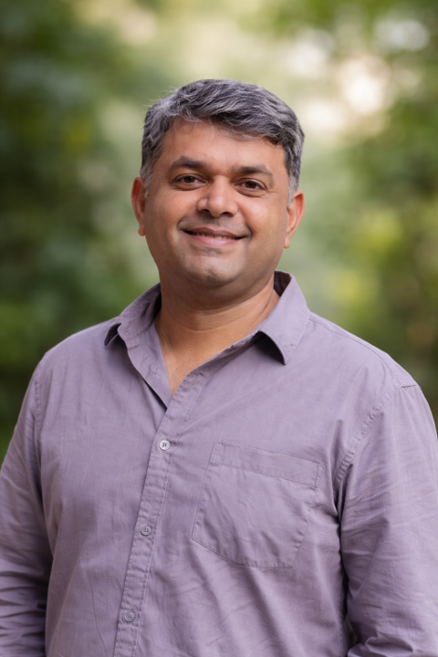

Working Dogs. Workplaces. India.
Assistance dogs. Therapy dogs. Facility dogs. They are entering hospitals, schools, and corporates across India - without standards, without policy, and without the operational infrastructure to support them.
We build that infrastructure. Policy, standards, and the on-ground support to make it work.
What we do
From policy to on-ground delivery.
Institutional Advisory
We help hospitals, schools, care facilities, and corporates develop working dog access protocols, safety procedures, and operational SOPs tailored to their setting.
Staff Training
We help train staff to interact with working dogs, maintain safety and hygiene standards, and respond to incidents.Training is tailored to the setting.
Why now
Working dogs are already here. The infrastructure is not.
Animal-assisted therapy is entering mainstream in India in various sectors. Assistance dogs are accompanying individuals to their place of work and public areas. Facility dogs are appearing in schools and care homes. But institutions are navigating this without guidance, without standards, and without anyone responsible for making it work safely.
Praying Mantis is building the infrastructure that makes working dog programmes in India viable, safe, and professionally run.

Vijay Raghunathan spent over two decades in technology businesses across Africa and Asia Pacific - products, partnerships, managed services, and emerging technologies. He left that career to build HeartDogs Enablement Foundation, India's first programme training rescued street dogs as assistance and therapy animals, with women in rural Karnataka as paid foster-trainers. He has built HeartDogs' training systems, operating model, logistics, and institutional partnerships from the ground up, in Indian conditions. Praying Mantis draws directly on that field experience.
Vijay Raghunathan
Founder, Praying Mantis - Bengaluru · LinkedIn
Want to bring working dogs safely into your workplace?